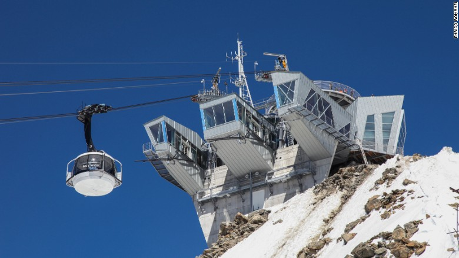
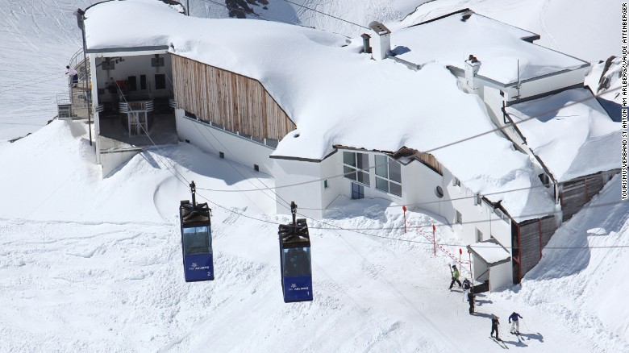
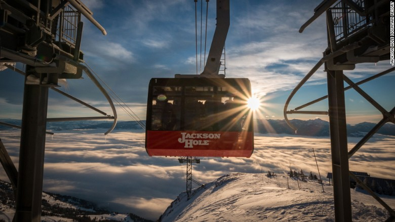
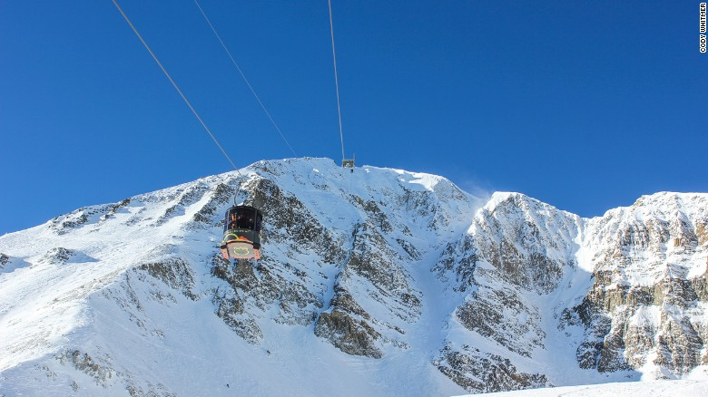

Article 1 : 10 of the world's most extreme ski lifts
http://edition.cnn.com/2017/03/06/trave ... index.html
(CNN)Ski lifts, like skiers, come in all shapes and sizes, with varying degrees of technical merit, but only a few have the X factor.
Whether it's a revolutionary design, nerve-jangling ride, or historic aura, some lifts offer more than just a fast-track to the top of the mountain.
It might even be more to do with the setting and the terrain they access than the cabled-contraptions themselves.
Here are 10 ski lifts that put the "X" into extreme, and give as good an experience going up as gravity does on the way down.
Aiguille du Midi, Chamonix, France
Skyway Monte Bianco, Courmayeur, Italy

Valluga, St. Anton, Austria

La Grave, France
Peak 2 Peak, Whistler-Blackcomb, Canada
Titlis Rotair gondola, Engelberg, Switzerland
Lessieres Express chairlift, Val d'Isere, France
Jackson Hole tram, Wyoming

Lone Peak tram, Big Sky, Montana

Jungfrau railway, Kleine Scheidegg, Switzerland
10個世界上最極端的滑雪纜車
（CNN）滑雪纜車，像滑雪者，具有各種形狀和尺寸，不同程度的技術優點，但只有幾個具有X因素。無論是革命性的設計，神經跳躍的騎行，還是歷史的光環，一些電梯不僅僅提供一個快速通道到山頂它甚至可能更多地與他們訪問的設置和地形相比，電纜控製本身。這裡有10個滑雪纜車，把“X”變成極端，並給出一個良好的體驗，隨著重力的下降。
Discussion questions:
1. What kind of extreme sport do you know?
2. Do you have the experience of skiing? If yes, why do you like it?
3. Will you try any of these extreme ski lifts?
4. Do you think that skiing is an extreme sport?
5. Would you recommend it to your friend? And why?
Article 2 : How gourmet food trucks took over the world
http://edition.cnn.com/2016/05/09/fooda ... index.html
Maybe in the U.S., which has apparently just had its meals-on-wheels crown stolen by Belgium.
The third Brussels Food Truck Festival, held May 6th to 8th, 2016, saw close to 140 food trucks feed about 150,000 hungry visitors.
That's been claimed as a record for the most gourmet wagons in one place at one time.
Of course, it could just be a sign of the planet's insatiable appetite for the culinary craze made cool in Los Angeles.
"It isn't just great food, it's a great social experience," Matt Geller, of the Southern California Mobile Food Vendors Association, told CNN at the event in the Belgian capital.
Geller says he's delighted wherever the food truck juggernaut rides into town.
"We're just excited. It really kind of spawned from Los Angeles and it came sweeping through the United States.
"Now we're seeing it's everywhere. We couldn't be happier."
也許在美國，它似乎只是在比利時被盜的車輪上的冠冕。
第三屆布魯塞爾食品卡車節，於2016年5月6日至8日舉行，看到近140輛食品卡車餵養約15萬飢餓的遊客。
這被稱為在同一時間在一個地方最美味的貨車的記錄。
當然，它可能只是一個跡象表明，這個星球對於烹飪熱潮在洛杉磯做得很酷的渴望。
南加利福尼亞州移動食品商協會的Matt Geller在比利時首都的活動中告訴CNN，這不僅僅是美食，而且是一個偉大的社交體驗。
Geller說，他很高興食物卡車司機騎在城裡。
“我們很興奮，它真的是從洛杉磯產生的，它掃過了美國。
“現在我們看到它無處不在，我們不能幸福。
Discussion questions:
1. Have you ever seen food truck in foreign countries?
2. What is your favorite food in the food truck?
3. If you were the owner of the food truck, what kind of food would you sell?
2017-03-18 Extreme ski lifts & gourmet food trucks
Who is online
Users browsing this forum: No registered users and 1 guest